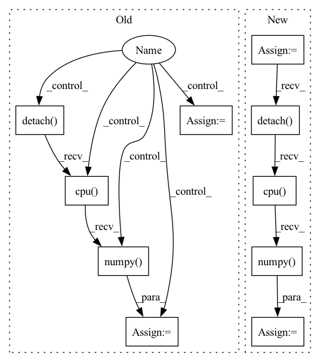

Pattern ID :1566

Before Change
action = action.detach().cpu().numpy().flatten()
log_pi = log_pi.detach().cpu().numpy().flatten()
adv_log_pi = adv_log_pi.detach().cpu().numpy().flatten()
if return_logits:
logits_pi = outs[-1]
logits_adv = self._adversary.forward(
observation, deterministic, return_log_prob=True
)[-1]
logits_pi = logits_pi.detach().cpu().numpy().flatten()
logits_adv = logits_adv.detach().cpu().numpy().flatten()
return action, log_pi, adv_log_pi, logits_pi, logits_adv
return action, log_pi, adv_log_pi
After Change
adv_log_pi = adv_log_pi.detach().cpu().numpy().flatten()
// compute additional distribution information
actor_distrib = self._actor.compute_distribution(observation)
adversary_distrib = self._adversary.compute_distribution(observation)
if self._discrete:
params_pi = outs[-1]
params_adv = adversary_distrib.logits
params_pi = params_pi.detach().cpu().numpy().flatten()
params_adv = params_adv.detach().cpu().numpy().flatten()
else:
mean = actor_distrib.mean.detach().cpu().numpy().flatten()
scale = actor_distrib.scale.detach().cpu().numpy().flatten()
params_pi = np.concatenate([mean, scale], -1)
mean = adversary_distrib.mean.detach().cpu().numpy().flatten()
scale = adversary_distrib.scale.detach().cpu().numpy().flatten()
params_adv = np.concatenate([mean, scale], -1)
return action, log_pi, adv_log_pi, params_pi, params_adv
def compute_values(self, observations: Observation) -> np.ndarray:
In pattern: SUPERPATTERN
Frequency: 3
Non-data size: 10
Instances
Fragment ID: 6990187
Project Name: yfletberliac/adversarially-guided-actor-critic
Commit Name: 4958ecb8ca6e7e344852f7aa9fc8668cd8cd074b
Time: 2021-07-07
Author: cibeah.cb@gmail.com
File Name: agac_torch/agac/agac_ppo.py
M Class Name: PPO
N Class Name: PPO
M Method Name: select_action(3)
N Method Name: select_action(4)
M Parent Class:
N Parent Class:
M File Name: agac_torch/agac/agac_ppo.py
N File Name: agac_torch/agac/agac_ppo.py
M Start Line: 115
M End Line: 138
N Start Line: 121
N End Line: 146
'>
Before Change
model.zero_grad()
pred = model(
torch.autograd.Variable(batch).to(device), lengths.cpu().numpy()
) //// perform forward pass
pred = torch.squeeze(pred)
loss = criterion(
pred.to(device), torch.autograd.Variable(targets.float()).to(device)
) //// compute loss
loss.backward() //// perform backward pass
optimizer.step() //// update weights
pred_val = pred >= 0.5 //// get predictions
y_true += list(targets.int().numpy()) //// accumulate targets from batch
y_pred += list(
pred_val.data.int().detach().cpu().numpy()
) //// accumulate preds from batch
total_loss += loss //// accumulate train loss
acc = accuracy_score(
After Change
sents2_len,
targets,
_,
_,
) in dataloader["train_loader"]:
model.zero_grad()
//// perform forward pass
pred = model(
sent1.to(device),
sent2.to(device),
sents1_len.to(device),
sents2_len.to(device),
)
//// compute loss
loss = criterion(
pred.to(device), torch.autograd.Variable(targets.float()).to(device)
)
//// perform backward pass
loss.backward()
//// update weights
optimizer.step()
//// accumulate targets from batch
y_true += list(targets.float().numpy())
//// accumulate preds from batch
y_pred += list(pred.data.float().detach().cpu().numpy())
//// accumulate train loss
total_loss += loss
'>
Fragment ID: 6990297
Project Name: shahrukhx01/siamese-nn-semantic-text-similarity
Commit Name: f3d054dd14ef532c408b1306c3341115777ac22f
Time: 2021-12-30
Author: sk28671@gmail.com
File Name: siamese_sts/trainer/train.py
M Class Name: AnonimousClass
N Class Name: AnonimousClass
M Method Name: train_model(6)
N Method Name: train_model(6)
M Parent Class:
N Parent Class:
M File Name: siamese_sts/trainer/train.py
N File Name: siamese_sts/trainer/train.py
M Start Line: 16
M End Line: 47
N Start Line: 16
N End Line: 59
'>
Before Change
pred = model(
torch.autograd.Variable(batch).to(device), lengths.cpu().numpy()
) //// perform forward pass
pred = torch.squeeze(pred)
loss = criterion(
pred.to(device), torch.autograd.Variable(targets.float()).to(device)
) //// compute loss
pred_val = pred >= 0.5 //// get predictions
y_true += list(targets.int())
y_pred += list(pred_val.data.int().detach().cpu().numpy())
total_loss += loss
acc = accuracy_score(y_true, y_pred) //// computing accuracy using sklearn"s function
After Change
sents2_len,
targets,
_,
_,
) in data_loader["val_loader"]:
//// perform forward pass
pred = model(
sent1.to(device),
sent2.to(device),
sents1_len.to(device),
sents2_len.to(device),
)
//// compute loss
loss = criterion(
pred.to(device), torch.autograd.Variable(targets.float()).to(device)
)
y_true += list(targets.float())
y_pred += list(pred.data.float().detach().cpu().numpy())
total_loss += loss
//// computing accuracy using sklearn"s function
acc = r2_score(y_true, y_pred)
'>
Fragment ID: 6990069
Project Name: shahrukhx01/siamese-nn-semantic-text-similarity
Commit Name: f3d054dd14ef532c408b1306c3341115777ac22f
Time: 2021-12-30
Author: sk28671@gmail.com
File Name: siamese_sts/trainer/train.py
M Class Name: AnonimousClass
N Class Name: AnonimousClass
M Method Name: evaluate_dev_set(5)
N Method Name: evaluate_dev_set(5)
M Parent Class:
N Parent Class:
M File Name: siamese_sts/trainer/train.py
N File Name: siamese_sts/trainer/train.py
M Start Line: 78
M End Line: 95
N Start Line: 91
N End Line: 116